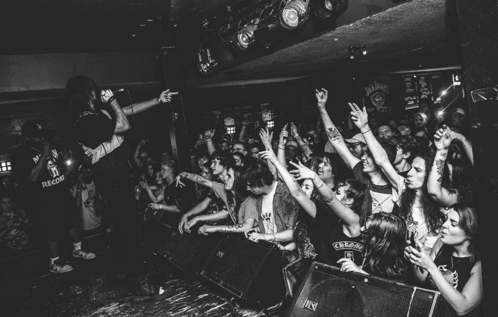

TeamSESH is an independent record label founded by Bones, who also releases all of his music under the label.
Bones - ( Elmo Kennedy O'Connor )
In 2016 It was announced that a SESH album is set released. The album You Are All To Blame was released the same year.
SESH also run an audiovisual social media project called SESHDIGITAL.
Primarily on Twitter and YouTube
It allows fans to gain regconition for their own skills by making SESH-themed content and tagging the latter.
Why SESH?
TeamSESH takes the small producers under it's wing bringing out the best of both the fans and creators. Small but tight community growing under the deadboy banner united through the music released by the group which covers a large variety of themes. Well written lyrics, uniquely produced tracks combined with covers sung by the spine chilling voice of Bones gives the public the niche aesthetic it's looking for.

FAILURE tour (Canada 2019)
Bones - Ressurection {FAILURE album}
As of 2021 TeamSESH has released over 50 albums and has went on many tours. Due to COVID-19 the team was unable to organise any live performances throughout 2020. In 2022 however TeamSESH will step on the scenes of Europe once more on their S C U M B A G tour. More information can be found Here